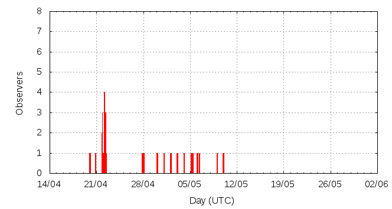

[ www.imo.net ]
This page shows automated results of the eta-Aquariids 2012, based on visual observations reported by citizen scientists through the report form of the International Meteor Organization (IMO). The information on this page is generated automatically; for scientific use please refer to manual analyses published in scientific journals (such as WGN). Send your feedback regarding this page to Geert Barentsen.
Page contents:
Note that the data will finally go into the Visual Meteor Database (VMDB) with manual inspection and rectifications. We are curretly completing the files of 2008-2011. The VMDB is an enormous project - any help will be greatly appreciated.
Page generated: 2012 May 10 at 13:02 UTC.
The graph below shows the ZHR (Zenithal Hourly Rate), which is the number of meteors an observer would see under a very dark sky with the radiant of the shower in zenith.
ZHRmax = 69 based on 123 eta-Aquariids reported in 40 intervals, assuming population index r = 2.4

| Time (UTC) | Solarlon | nINT | nETA | ZHR | Particle density | |
|---|---|---|---|---|---|---|
| 2012-04-22 07:42 | 32.412 | 13 | 5 | 8 | ±3 | 15 / 109·km3 |
| 2012-04-29 10:08 | 39.325 | 3 | 7 | 11 | ±4 | 20 / 109·km3 |
| 2012-05-02 02:27 | 41.926 | 6 | 27 | 19 | ±4 | 35 / 109·km3 |
| 2012-05-04 02:49 | 43.880 | 2 | 21 | 46 | ±10 | 84 / 109·km3 |
| 2012-05-05 06:47 | 45.008 | 10 | 42 | 69 | ±11 | 126 / 109·km3 |
| 2012-05-05 15:31 | 45.360 | 3 | 18 | 57 | ±13 | 104 / 109·km3 |
| 2012-05-09 09:12 | 48.975 | 3 | 3 | 15 | ±8 | 27 / 109·km3 |
The reported intervals are automatically added together into the bins shown above, based on the number of meteors and the distribution of the intervals. For each bin, the following parameters are computed:
Data has been received from 12 observers in 9 countries. Thank you for your efforts!
Note: click on the map for an interactive version.

| Observer | Country | Teff | nETA |
|---|---|---|---|
| Salvador Aguirre | Mexico | 2.70h | 0 |
| Alexandre Amorim | Brazil | 6.42h | 24 |
| Tim Cooper | South Africa | 10.71h | 91 |
| Diego De Bastiani | Brazil | 1.80h | 4 |
| Mitja Govedi? | Slovenia | 1.00h | 0 |
| Vilem Heblik | Czech Republic | 1.75h | 1 |
| Margarete Jacques Amorim | Brazil | 3.16h | 2 |
| Maciej Myszkiewicz | Poland | 3.00h | 1 |
| Krzysztof Pieszczoch | Poland | 3.25h | 0 |
| Terrence Ross | United States | 2.08h | 7 |
| Branislav Savic | Serbia | 2.14h | 4 |
| Frank Waechter | Germany | 1.18h | 0 |
| Sabine Waechter | Germany | 1.48h | 0 |
Create your own analysis. The files below can be opened using Excel:
eta2012_rate.csv (number of meteors per interval per observer)
eta2012_magn.csv (number of meteors per magnitude bin per observer)
The information on this page may be distributed freely provided credit is given to the International Meteor Organization (IMO) and, when possible, to the individual observers. The computer facilities to generate this page are provided by ESA/RSSD and Armagh Observatory.
References: